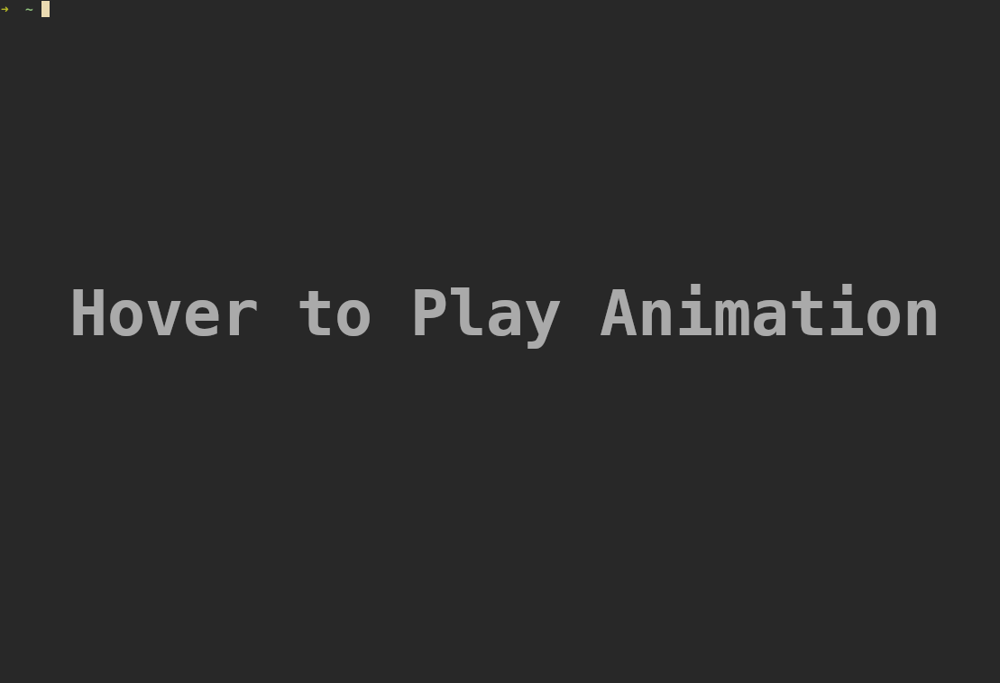

I love the terminal multiplexer, tmux. It adds
functionality to the terminal, such as multiple tabs, pane splitting, and the
ability to detach and re-attach everything later (which is amazing when
combined with ssh). I have been utilizing tmux even more at work, and recently
started to script the start up/configuration a tmux session for each project.
The other day, I decided to write a script to spin up a session for working on my
website… and thought it would be a great tutorial!
Tmux

When working on a project, I like to use tmux to maintain all of the terminal windows related to it. This keeps everything together, and even allows me to detach the session, switch to another computer, ssh into the previous computer, and re-attach my working tmux session. Paired with the fact that I’ve started using VIM again, it works seamlessly. Scripting the initialization makes getting started even smoother.
Automating tmux initialization for working on my website
New Script
First, lets create a new script. Start by opening a new file, and adding a bash shebang line to the top:
#!/bin/bashThis line tells the system that the following text will be a bash script.
Optional: Save and close the file, then re-open it to take advantage the text editor’s bash syntax highlighting if it didn’t automatically switch it on.
Create a new tmux session (with var name)
Next, lets define a variable to store the tmux session name. This will make it easier to change the session name later on. Using the session variable, a new tmux-session with our desired name can be created.
# Session Name
session="Website"
# Start New Session with our name
tmux new-session -d -s $sessionName initial default Window (and switch to zsh)
Let’s customize the default window and give it a new name. Lets call this first tmux
window "Main", and have it simply run a zsh shell. After
creating a new session, there is only one window, so I know it will be
identified with the number 0. I can use this with -t to rename the window.
# Name first Window and start zsh
tmux rename-window -t 0 'Main'
tmux send-keys -t 'Main' 'zsh' C-m 'clear' C-mI can then use the send-keys command with the new window name to start zsh.
This is the equivalent of typing zsh, [Enter], clear, [Enter] into the
command line.
Add a new (named) window for hugo server
With the main tmux window setup, I want to add a few more for
different tasks. First, I want a window that can run the hugo server
as I’m writing a post. With a session already created, I can name the
window as I create it, using just the new-window comamnd with the
-n flag.
# Create and setup pane for hugo server
tmux new-window -t $session:1 -n 'Hugo Server'
tmux send-keys -t 'Hugo Server' 'hugo serve -D -F' C-mAgain, I used tmux send-keys, this time to send the hugo serve -D
-F command to start up a hugo server for local draft editing.
Add a new (name) pane for vim
Now, I need a place to write website posts… so lets fire up a new tmux window, and open up neovim inside of it.
# setup Writing window
tmux new-window -t $SESSION:2 -n 'Writing'
tmux send-keys -t 'Writing' "nvim" C-mAnother shell
Lastly, lets create one more shell window, just in case it’s needed. Why not?
# Setup an additional shell
tmux new-window -t $SESSION:3 -n 'Shell'
tmux send-keys -t 'Shell' "zsh" C-m 'clear' C-mAttach Session
With the tmux session all configured and customized, we can tell the script to
go ahead and attach it, using the attach-session command with the session
name variable.
# Attach Session, on the Main window
tmux attach-session -t $SESSION:0Note: the 0 tells tmux to attach the first window (Main). Using
another index value will attach a different window. For example, 1
would open the Hugo Server window when attaching
Bonus: Minor improvement
At this point, I was done with the tmux script. It worked well for creating my session and attaching it. However, there was one issue I still had. If I ran the script when there was a tmux session with the same name already, it would just double up the windows in that session. If I accidentally did this, I would have to go through each window, close out whatever and was running, and then close the window.
To fix this issue, I decided to wrap the initialization commands inside of an
if statement, and only run them if the tmux session didn’t already exist.
Checking if the Session Already Exists
First, I needed a way to check whether the desired tmux session already existed
or not. This can be done by “grep’ing” the output of tmux list-sessions for
the session name, which we’ve already conveniently stored in our $SESSION
variable. For Cleanliness, I took the output of that process and saved it in a
SESSIONEXISTS variable, defined directly under SESSION in the script.
SESSIONEXISTS=$(tmux list-sessions | grep $SESSION)If the session exists, SESSIONEXISTS will be a string of the line which grep
matched. Otherwise, it will just be an empty string ("").
Now, I can use the SESSIONEXISTS variable with an if condition to wrap the tmux
setup code so that it only runs if SESSIONEXISTS is "".
if [ "$SESSIONEXISTS" = "" ]
then
...
fiThe attach-session command should be outside of the if body,
because it will be run in both cases (even if the session doesn’t have
to be created, we still want to attach the one that already exists).
Conclusion
That is it. Here is the script with everything all put together:
#!/bin/sh
# Set Session Name
SESSION="Website"
SESSIONEXISTS=$(tmux list-sessions | grep $SESSION)
# Only create tmux session if it doesn't already exist
if [ "$SESSIONEXISTS" = "" ]
then
# Start New Session with our name
tmux new-session -d -s $SESSION
# Name first Pane and start zsh
tmux rename-window -t 0 'Main'
tmux send-keys -t 'Main' 'zsh' C-m 'clear' C-m # Switch to bind script?
# Create and setup pane for hugo server
tmux new-window -t $SESSION:1 -n 'Hugo Server'
tmux send-keys -t 'Hugo Server' 'hugo serve -D -F' C-m # Switch to bind script?
# setup Writing window
tmux new-window -t $SESSION:2 -n 'Writing'
tmux send-keys -t 'Writing' "nvim" C-m
# Setup an additional shell
tmux new-window -t $SESSION:3 -n 'Shell'
tmux send-keys -t 'Shell' "zsh" C-m 'clear' C-m
fi
# Attach Session, on the Main window
tmux attach-session -t $SESSION:0I hope this post has been helpful! Although, I have to admit that this post may be moot if I decide check out tmuxinator (which a co-worker recommended) … oh well. I guess this endeavor was still a good exercise in some bash scripting :P.
Why I Got an iPad